pacman::p_load(sf, spatstat, tmap, tidyverse,rvest)Hands-on Exercise 05
5 Second-Order Spatial Point Pattern Analysis Methods
5.1 Overview
Second-order spatial point pattern analysis focuses on the spatial relationships between points, asking whether the presence of one point influences the location of others.
Unlike first-order analysis, which only looks at point density, second-order methods examine clustering, dispersion, or randomness across different spatial scales.
In this hands-on exercise, we will use spatstat functions to explore the spatial processes of childcare centres in Singapore.
The main questions are:
1. Are childcare centres randomly distributed across Singapore?
2. If not, where are the areas with higher concentrations of centres?
5.2 The Data
To answer these questions, two datasets are used:
- Child Care Services (data.gov.sg) – A point dataset providing both location and attribute information of childcare centres.
- Master Plan 2019 Subzone Boundary (URA) – A polygon dataset describing Singapore’s planning subzone boundaries.
Both datasets are available from Singapore’s open data portal in KML and GeoJSON formats.
5.3 Installing and Loading the R Packages
For this exercise, several R packages are required:
- sf – for importing, managing, and processing vector-based geospatial data.
- spatstat – provides a wide range of functions for point pattern analysis, including 1st- and 2nd-order methods as well as kernel density estimation (KDE).
- tmap – for creating cartographic-quality static maps and interactive maps (via the Leaflet API).
- tidyverse – a family of packages for modern data science, offering consistent and intuitive tools for data manipulation, analysis, and visualization.
The code below installs (if necessary) and loads these packages:
5.4 Data Import and Preparation
5.4.1 Data Import
The processes of importing and preparing the geospatial data to meet the analysis are similar to Chapter 4. Please refer to the following sub-sections, if necessary:
mpsz_sf <- st_read("data/MasterPlan2019SubzoneBoundaryNoSeaKML.kml") %>%
st_zm(drop = TRUE, what = "ZM") %>% st_transform(crs = 3414)Reading layer `URA_MP19_SUBZONE_NO_SEA_PL' from data source
`/Users/geloliu/Gelo-BingBing/ISSS626-GAA/Hands-on_Ex/Hands-on_Ex05/data/MasterPlan2019SubzoneBoundaryNoSeaKML.kml'
using driver `KML'
Simple feature collection with 332 features and 2 fields
Geometry type: MULTIPOLYGON
Dimension: XY, XYZ
Bounding box: xmin: 103.6057 ymin: 1.158699 xmax: 104.0885 ymax: 1.470775
z_range: zmin: 0 zmax: 0
Geodetic CRS: WGS 84childcare_sf <- st_read("data/ChildCareServices.kml") %>%
st_zm(drop = TRUE, what = "ZM") %>%
st_transform(crs = 3414)Reading layer `CHILDCARE' from data source
`/Users/geloliu/Gelo-BingBing/ISSS626-GAA/Hands-on_Ex/Hands-on_Ex05/data/ChildCareServices.kml'
using driver `KML'
Simple feature collection with 1925 features and 2 fields
Geometry type: POINT
Dimension: XYZ
Bounding box: xmin: 103.6878 ymin: 1.247759 xmax: 103.9897 ymax: 1.462134
z_range: zmin: 0 zmax: 0
Geodetic CRS: WGS 845.4.2 Data Preparation
Please refer to the following sub-sections, if necessary:
- Geospatial Data wrangling for preparing geospatial data in ppp object class required by spatstat package.
extract_kml_field <- function(html_text, field_name) {
if (is.na(html_text) || html_text == "") return(NA_character_)
page <- read_html(html_text)
rows <- page %>% html_elements("tr")
value <- rows %>%
keep(~ html_text2(html_element(.x, "th")) == field_name) %>%
html_element("td") %>%
html_text2()
if (length(value) == 0) NA_character_ else value
}mpsz_sf <- mpsz_sf %>%
mutate(
REGION_N = map_chr(Description, extract_kml_field, "REGION_N"),
PLN_AREA_N = map_chr(Description, extract_kml_field, "PLN_AREA_N"),
SUBZONE_N = map_chr(Description, extract_kml_field, "SUBZONE_N"),
SUBZONE_C = map_chr(Description, extract_kml_field, "SUBZONE_C")
) %>%
select(-Name, -Description) %>%
relocate(geometry, .after = last_col())mpsz_cl <- mpsz_sf %>%
filter(SUBZONE_N != "SOUTHERN GROUP",
PLN_AREA_N != "WESTERN ISLANDS",
PLN_AREA_N != "NORTH-EASTERN ISLANDS")write_rds(mpsz_cl,
"data/mpsz_cl.rds")5.4.2.1Data wrangling
- Converting sf data frames to ppp class
childcare_ppp <- as.ppp(childcare_sf)class(childcare_ppp)[1] "ppp"summary(childcare_ppp)Marked planar point pattern: 1925 points
Average intensity 2.417323e-06 points per square unit
Coordinates are given to 11 decimal places
Mark variables: Name, Description
Summary:
Name Description
Length:1925 Length:1925
Class :character Class :character
Mode :character Mode :character
Window: rectangle = [11810.03, 45404.24] x [25596.33, 49300.88] units
(33590 x 23700 units)
Window area = 796335000 square units- Creating owin object
sg_owin <- as.owin(mpsz_cl)class(sg_owin)[1] "owin"- Combining point events object and owin object
childcareSG_ppp = childcare_ppp[sg_owin]childcareSG_pppMarked planar point pattern: 1925 points
Mark variables: Name, Description
window: polygonal boundary
enclosing rectangle: [2667.54, 55941.94] x [21448.47, 50256.33] units- Choa Chu Kang（childcare_ck_ppp）
ck_sf <- mpsz_cl %>% filter(PLN_AREA_N == "CHOA CHU KANG")
ck_owin <- as.owin(ck_sf)
childcare_ck_ppp <- childcareSG_ppp[ck_owin]- Tampines（childcare_tm_ppp）
tm_sf <- mpsz_cl %>% filter(PLN_AREA_N == "TAMPINES")
tm_owin <- as.owin(tm_sf)
childcare_tm_ppp <- childcareSG_ppp[tm_owin]5.5 Second-order Spatial Point Patterns Analysis
5.6 Analysing Spatial Point Process Using G-Function
The G function measures the distribution of the distances from an arbitrary event to its nearest event. In this section, you will learn how to compute G-function estimation by using Gest() of spatstat package. You will also learn how to perform monta carlo simulation test using envelope() of spatstatpackage.
5.6.1 Choa Chu Kang planning area
5.6.1.1 Computing G-function estimation
set.seed(1234)The code chunk below is used to compute G-function using Gest() of spatatpackage.
G_CK = Gest(childcare_ck_ppp, correction = "border")
plot(G_CK, xlim=c(0,500))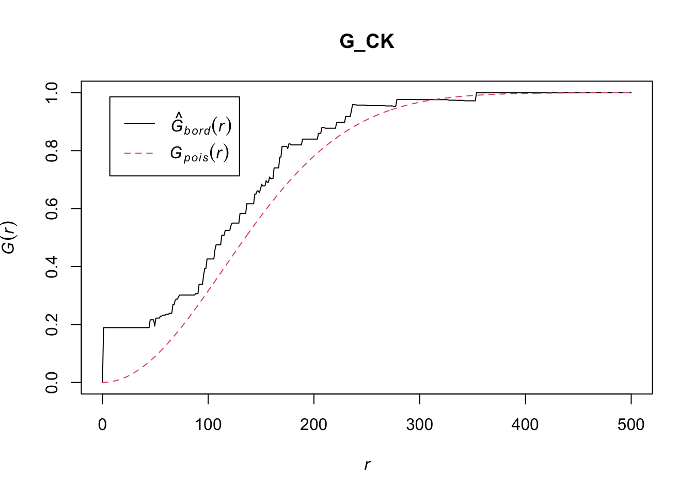
5.6.1.2 Performing Complete Spatial Randomness Test
To confirm the observed spatial patterns above, a hypothesis test will be conducted. The hypothesis and test are as follows:
Ho = The distribution of childcare services at Choa Chu Kang are randomly distributed.
H1= The distribution of childcare services at Choa Chu Kang are not randomly distributed.
The null hypothesis will be rejected if p-value is smaller than alpha value of 0.001.
(Monte Carlo test with G-fucntion)
# Run once in Console to generate and save
#G_CK.csr <- envelope(childcare_ck_ppp, Gest, nsim = 999)
#saveRDS(G_CK.csr, "data/G_CK_csr.rds")
# In Rmd, always read saved result
G_CK.csr <- readRDS("data/G_CK_csr.rds")plot(G_CK.csr)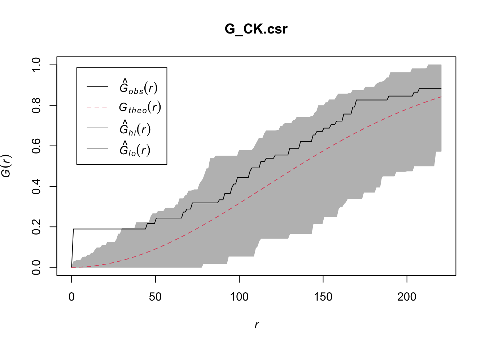
5.6.2 Tampines planning area
5.6.2.1 Computing G-function estimation
G_tm = Gest(childcare_tm_ppp, correction = "best")
plot(G_tm)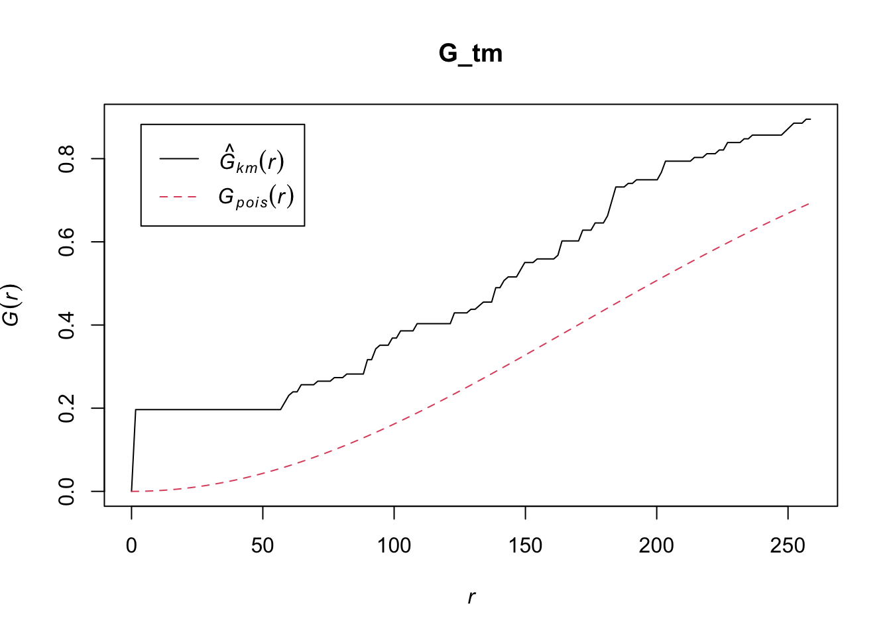
5.6.2.2 Performing Complete Spatial Randomness Test
To confirm the observed spatial patterns above, a hypothesis test will be conducted. The hypothesis and test are as follows:
Ho = The distribution of childcare services at Tampines are randomly distributed.
H1= The distribution of childcare services at Tampines are not randomly distributed.
The null hypothesis will be rejected is p-value is smaller than alpha value of 0.001.
The code chunk below is used to perform the hypothesis testing.
# Run once in Console to generate and save
#G_tm.csr <- envelope(childcare_tm_ppp, Gest, correction = "all", nsim = 999)
#saveRDS(G_tm.csr, "data/G_tm_csr.rds")
# In Rmd
G_tm.csr <- readRDS("data/G_tm_csr.rds")plot(G_tm.csr)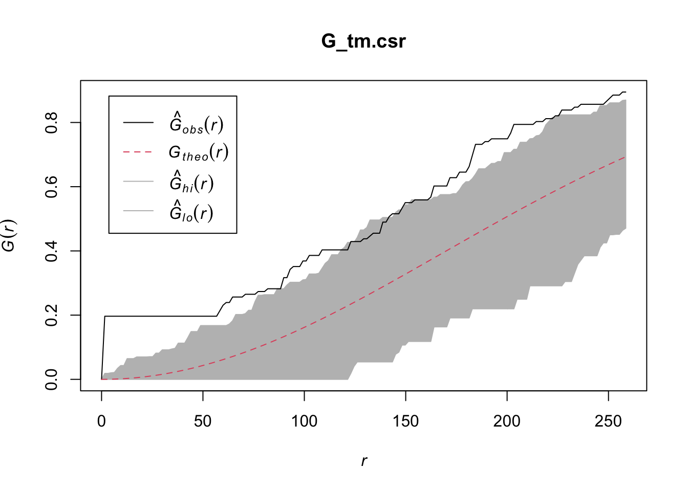
5.7 Analysing Spatial Point Process Using F-Function
The F function estimates the empty space function F(r) or its hazard rate h(r) from a point pattern in a window of arbitrary shape. In this section, you will learn how to compute F-function estimation by using Fest() of spatstatpackage. You will also learn how to perform monta carlo simulation test using envelope() of spatstat package.
5.7.1 Choa Chu Kang planning area
5.7.1.1 Computing F-function estimation
The code chunk below is used to compute F-function using Fest() of spatatpackage.
F_CK = Fest(childcare_ck_ppp)
plot(F_CK)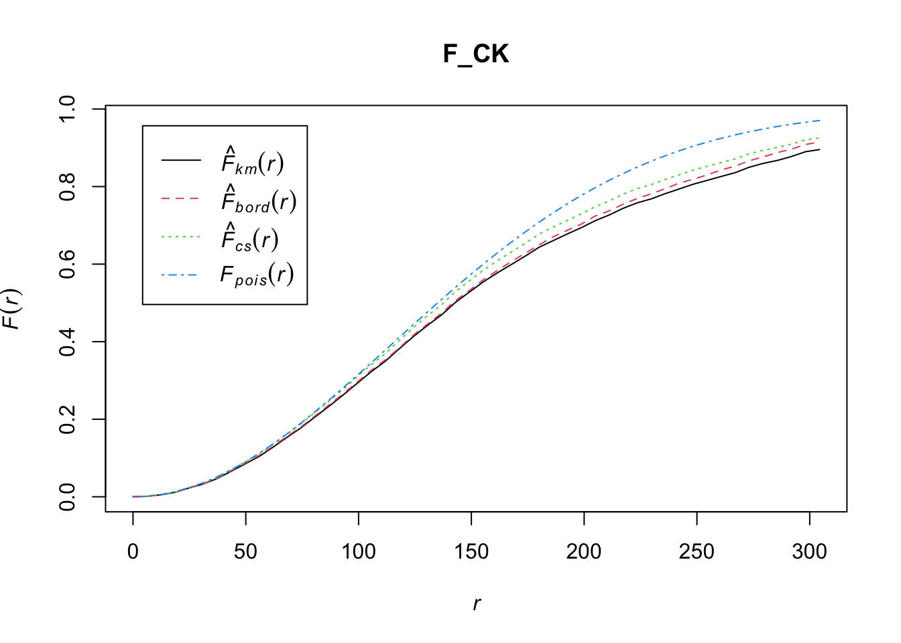
5.7.2 Performing Complete Spatial Randomness Test
To confirm the observed spatial patterns above, a hypothesis test will be conducted. The hypothesis and test are as follows:
Ho = The distribution of childcare services at Choa Chu Kang are randomly distributed.
H1= The distribution of childcare services at Choa Chu Kang are not randomly distributed.
The null hypothesis will be rejected if p-value is smaller than alpha value of 0.001.
(Monte Carlo test with F-fucntion)
# Run once in Console
#F_CK.csr <- envelope(childcare_ck_ppp, Fest, nsim = 999)
#saveRDS(F_CK.csr, "data/F_CK_csr.rds")
F_CK.csr <- readRDS("data/F_CK_csr.rds")plot(F_CK.csr)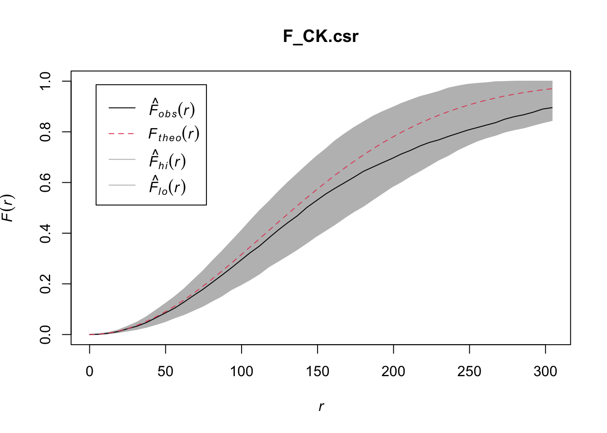
5.7.3 Tampines planning area
5.7.3.1 Computing F-function estimation
(Monte Carlo test with F-fucntion)
F_tm = Fest(childcare_tm_ppp, correction = "best")
plot(F_tm)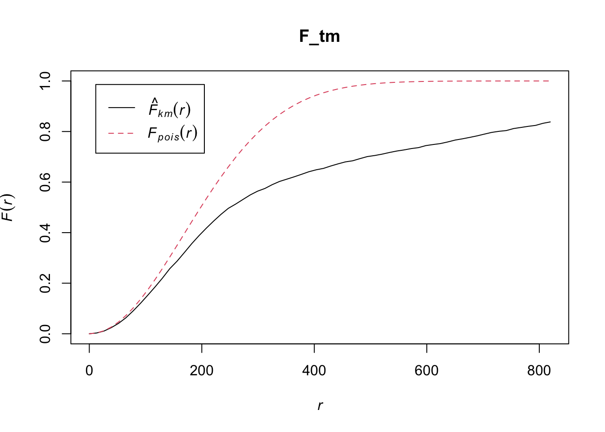
5.7.3.2 Performing Complete Spatial Randomness Test
To confirm the observed spatial patterns above, a hypothesis test will be conducted. The hypothesis and test are as follows:
Ho = The distribution of childcare services at Tampines are randomly distributed.
H1= The distribution of childcare services at Tampines are not randomly distributed.
The null hypothesis will be rejected is p-value is smaller than alpha value of 0.001.
The code chunk below is used to perform the hypothesis testing.
# Run once in Console
#F_tm.csr <- envelope(childcare_tm_ppp, Fest, correction = "all", nsim = 999)
#saveRDS(F_tm.csr, "data/F_tm_csr.rds")
F_tm.csr <- readRDS("data/F_tm_csr.rds")plot(F_tm.csr)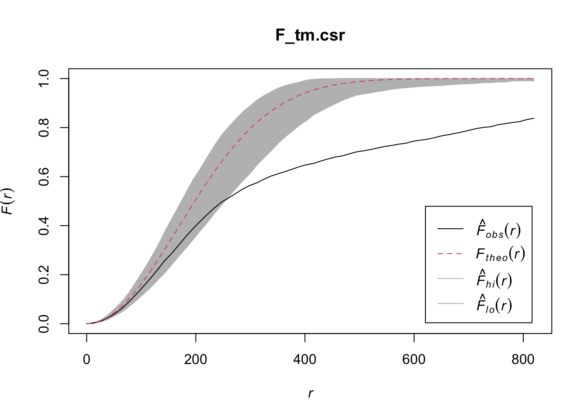
5.8 Analysing Spatial Point Process Using K-Function
K-function measures the number of events found up to a given distance of any particular event. In this section, you will learn how to compute K-function estimates by using Kest() of spatstat package. You will also learn how to perform monta carlo simulation test using envelope() of spatstat package.
5.8.1 Choa Chu Kang planning area
5.8.1.1 Computing K-fucntion estimate
K_ck = Kest(childcare_ck_ppp, correction = "Ripley")
plot(K_ck, . -r ~ r, ylab= "K(d)-r", xlab = "d(m)")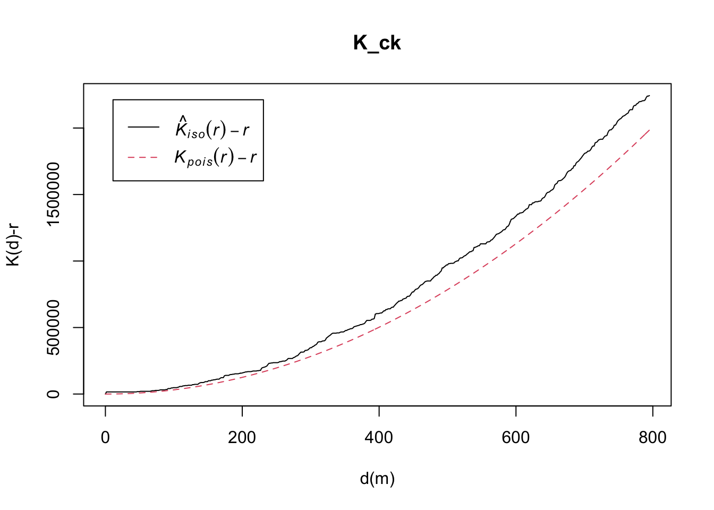
5.8.1.2 Performing Complete Spatial Randomness Test
To confirm the observed spatial patterns above, a hypothesis test will be conducted. The hypothesis and test are as follows:
Ho = The distribution of childcare services at Choa Chu Kang are randomly distributed.
H1= The distribution of childcare services at Choa Chu Kang are not randomly distributed.
The null hypothesis will be rejected if p-value is smaller than alpha value of 0.001.
The code chunk below is used to perform the hypothesis testing.
# Run once in Console
#K_ck.csr <- envelope(childcare_ck_ppp, Kest, nsim = 99, rank = 1, glocal=TRUE)
#saveRDS(K_ck.csr, "data/K_ck_csr.rds")
K_ck.csr <- readRDS("data/K_ck_csr.rds")plot(K_ck.csr, . - r ~ r, xlab="d", ylab="K(d)-r")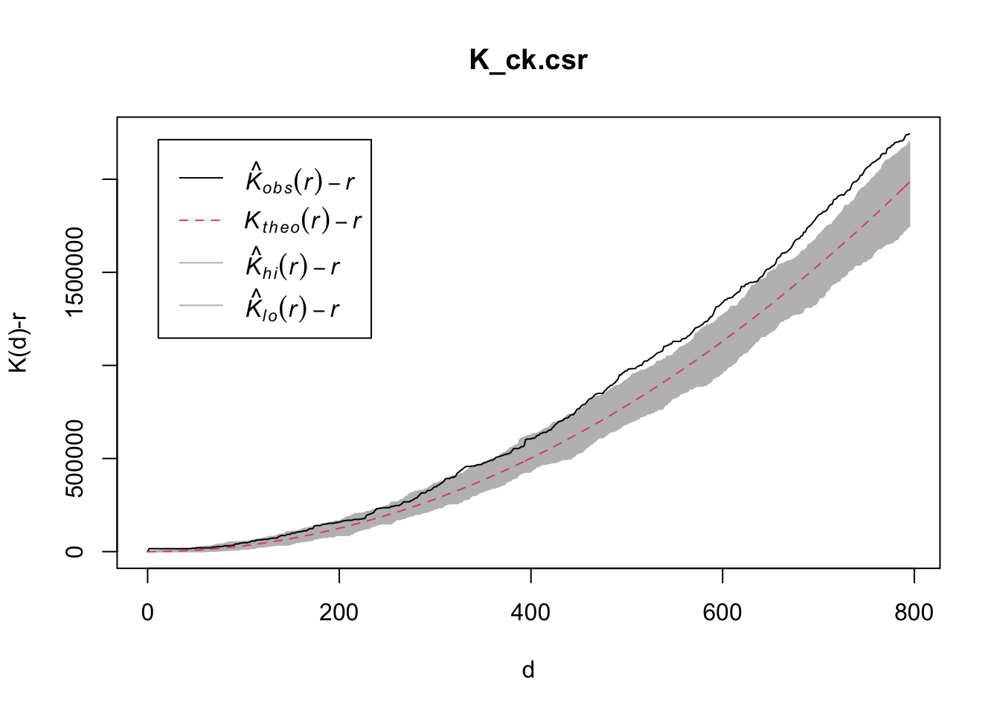
5.8.2 Tampines planning area
5.8.2.1 Computing K-fucntion estimation
K_tm = Kest(childcare_tm_ppp, correction = "Ripley")
plot(K_tm, . -r ~ r,
ylab= "K(d)-r", xlab = "d(m)",
xlim=c(0,1000))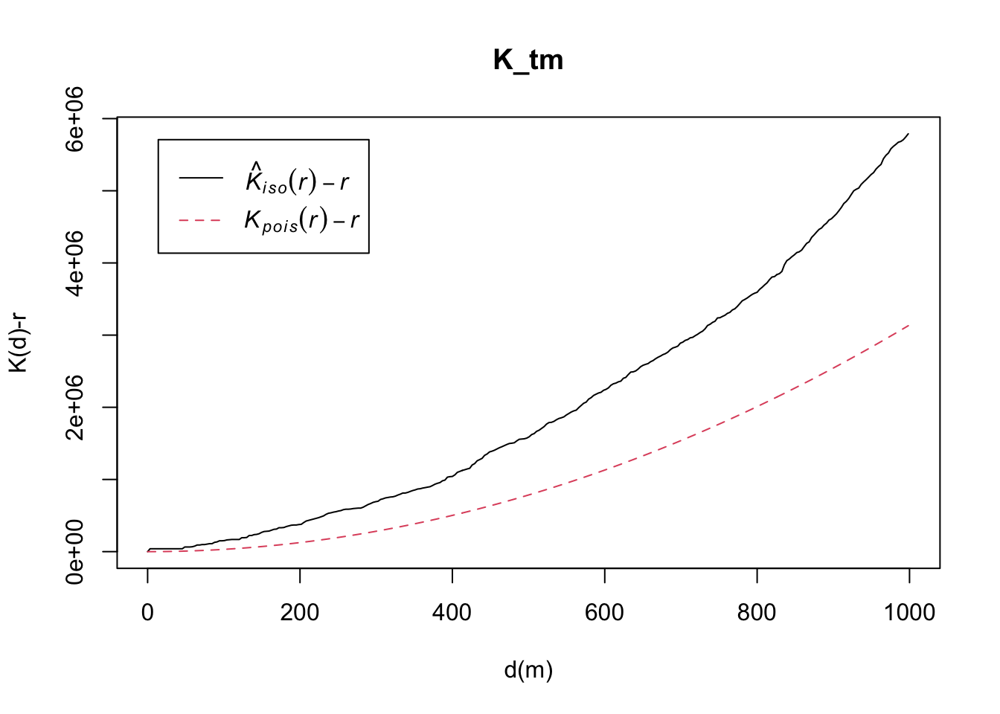
5.8.2.2 Performing Complete Spatial Randomness Test
To confirm the observed spatial patterns above, a hypothesis test will be conducted. The hypothesis and test are as follows:
Ho = The distribution of childcare services at Tampines are randomly distributed.
H1= The distribution of childcare services at Tampines are not randomly distributed.
The null hypothesis will be rejected if p-value is smaller than alpha value of 0.001.
The code chunk below is used to perform the hypothesis testing.
# Run once in Console
#K_tm.csr <- envelope(childcare_tm_ppp, Kest, nsim = 99, rank = 1, glocal=TRUE)
#saveRDS(K_tm.csr, "data/K_tm_csr.rds")
K_tm.csr <- readRDS("data/K_tm_csr.rds")plot(K_tm.csr, . - r ~ r,
xlab="d", ylab="K(d)-r", xlim=c(0,500))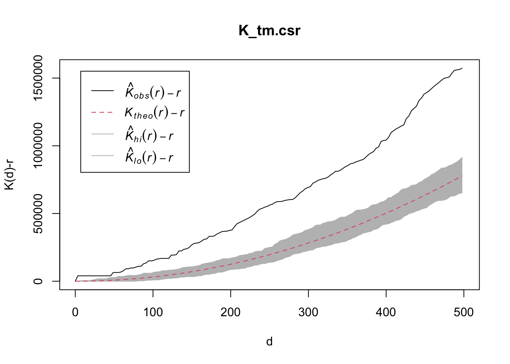
5.9 Analysing Spatial Point Process Using L-Function
In this section, you will learn how to compute L-function estimation by using Lest() of spatstat package. You will also learn how to perform monta carlo simulation test using envelope() of spatstat package.
5.9.1 Choa Chu Kang planning area
5.9.1.1 Computing L Fucntion estimation
L_ck = Lest(childcare_ck_ppp, correction = "Ripley")
plot(L_ck, . -r ~ r,
ylab= "L(d)-r", xlab = "d(m)")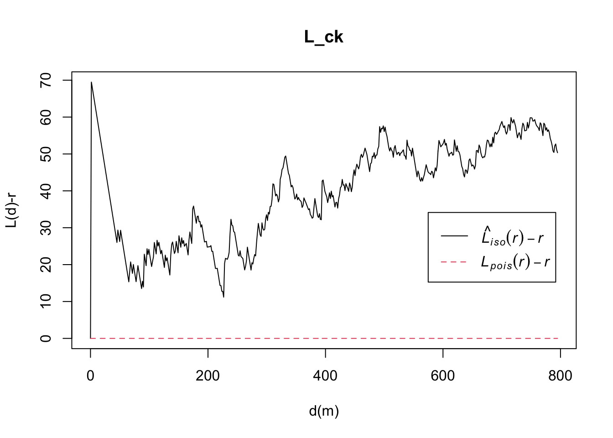
5.9.1.2 Performing Complete Spatial Randomness Test
To confirm the observed spatial patterns above, a hypothesis test will be conducted. The hypothesis and test are as follows:
Ho = The distribution of childcare services at Choa Chu Kang are randomly distributed.
H1= The distribution of childcare services at Choa Chu Kang are not randomly distributed.
The null hypothesis will be rejected if p-value if smaller than alpha value of 0.001.
The code chunk below is used to perform the hypothesis testing.
# Run once in Console
#L_ck.csr <- envelope(childcare_ck_ppp, Lest, nsim = 99, rank = 1, glocal=TRUE)
#saveRDS(L_ck.csr, "data/L_ck_csr.rds")
L_ck.csr <- readRDS("data/L_ck_csr.rds")plot(L_ck.csr, . - r ~ r, xlab="d", ylab="L(d)-r")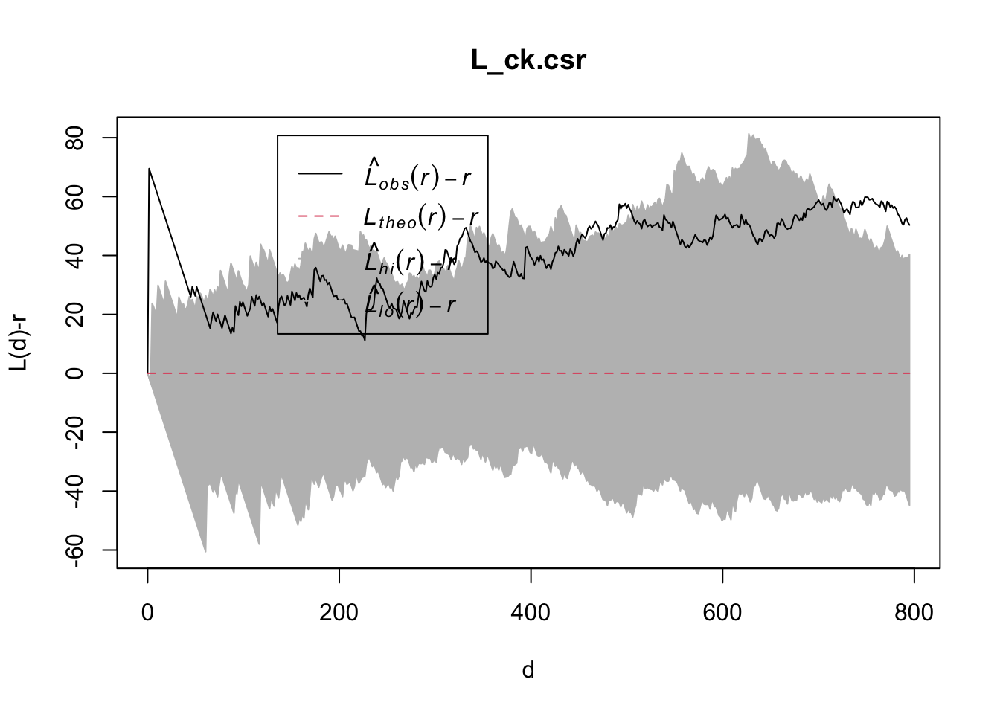
5.9.2 Tampines planning area
5.9.2.1 Computing L-fucntion estimate
L_tm = Lest(childcare_tm_ppp, correction = "Ripley")
plot(L_tm, . -r ~ r,
ylab= "L(d)-r", xlab = "d(m)",
xlim=c(0,1000))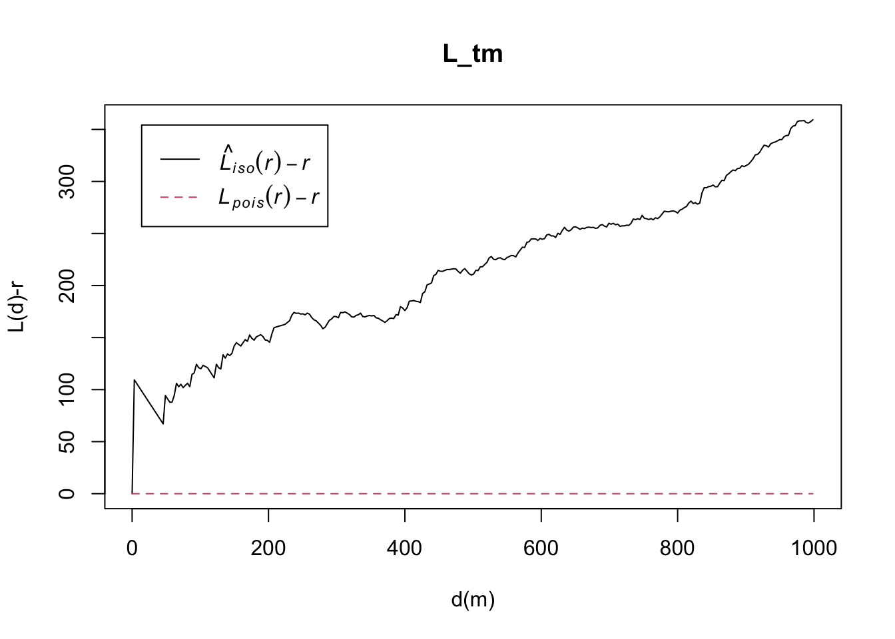
5.9.2.2 Performing Complete Spatial Randomness Test
To confirm the observed spatial patterns above, a hypothesis test will be conducted. The hypothesis and test are as follows:
Ho = The distribution of childcare services at Tampines are randomly distributed.
H1= The distribution of childcare services at Tampines are not randomly distributed.
The null hypothesis will be rejected if p-value is smaller than alpha value of 0.001.
The code chunk below will be used to perform the hypothesis testing.
# Run once in Console
#L_tm.csr <- envelope(childcare_tm_ppp, Lest, nsim = 99, rank = 1, glocal=TRUE)
#saveRDS(L_tm.csr, "data/L_tm_csr.rds")
L_tm.csr <- readRDS("data/L_tm_csr.rds")plot(L_tm.csr, . - r ~ r,
xlab="d", ylab="L(d)-r", xlim=c(0,500))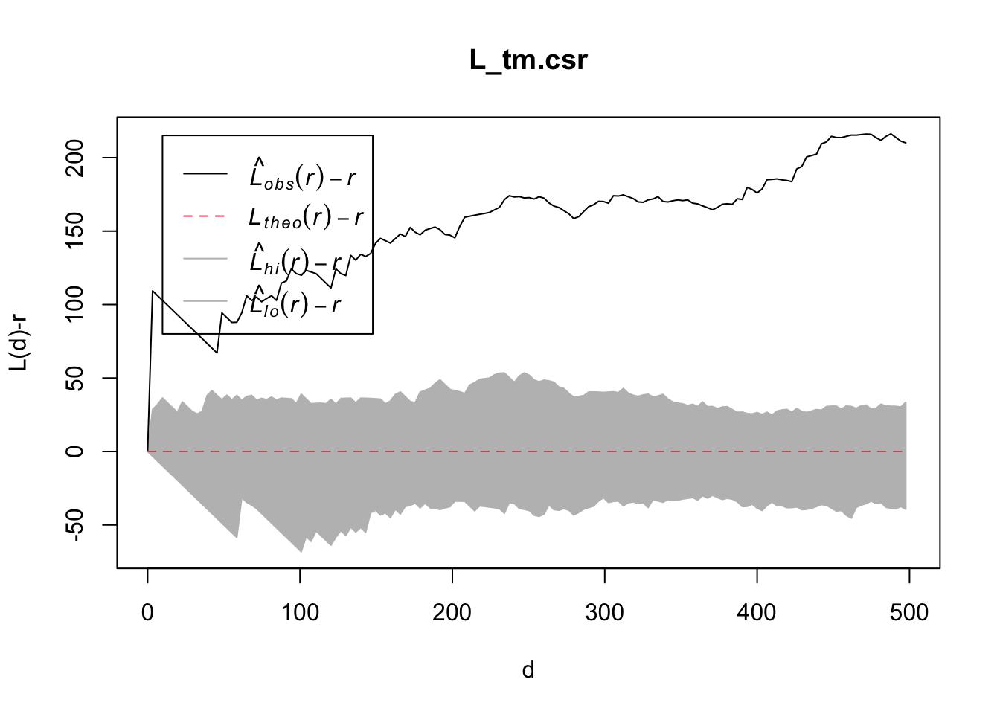
5.9 Conclusion
In this chapter, we moved beyond first-order analysis and explored second-order spatial point pattern methods to study childcare centres in Singapore. By applying Ripley’s K-function, L-function, and the pair correlation function, we examined whether centres are randomly distributed, clustered, or more evenly spaced at different spatial scales.
The results indicate that childcare centres are not randomly distributed. Instead, they show clear evidence of clustering, which reflects real-world planning and demand patterns. These findings highlight areas of concentration as well as regions that may be underserved, offering useful insights for both policymakers and service providers when planning new facilities.
Overall, second-order analysis complements first-order methods by uncovering the relationships between points, providing a deeper understanding of spatial processes that cannot be captured by density measures alone.